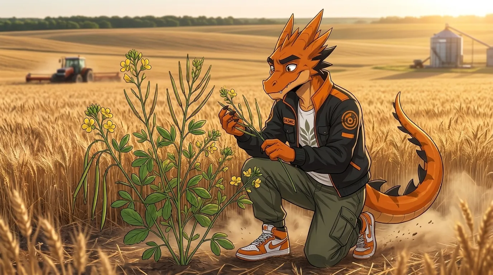
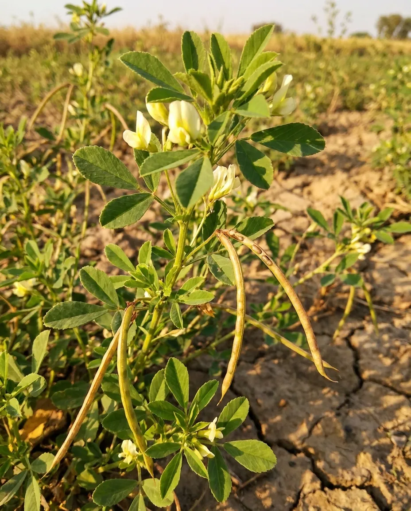
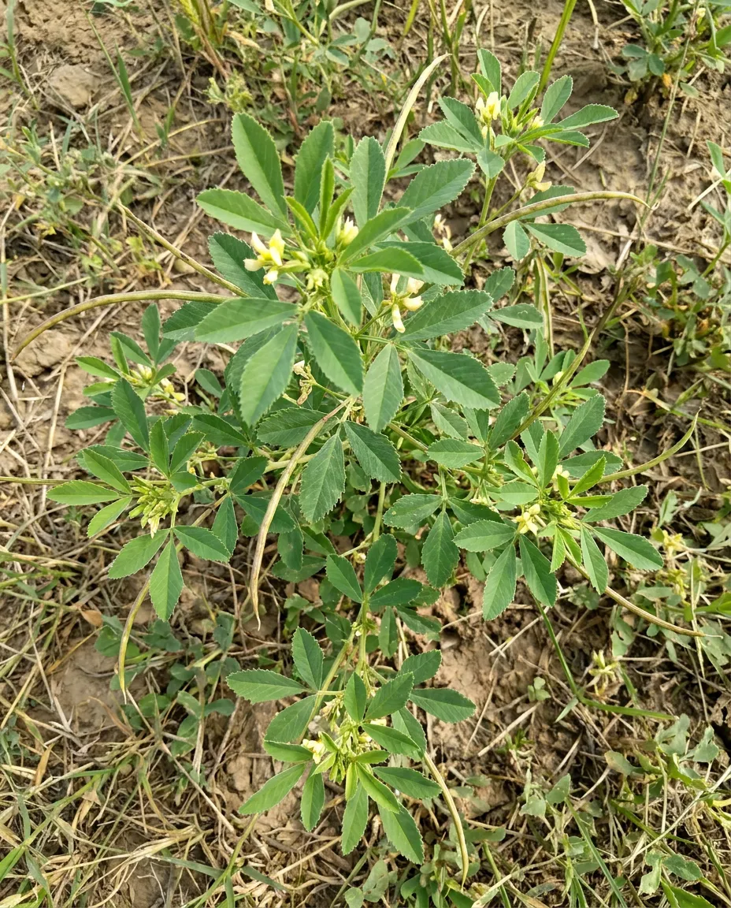

ПАЖИТНИК
Пажитник — однолетнее растение из семейства бобовых, культивируется во многих регионах мира — преимущественно в тёплых и умеренных климатических зонах. В России пажитник выращивают в южных регионах, например на Северном Кавказе, а также в небольших объёмах и в средней полосе.
Семена пажитника используют в разных сферах — прежде всего в кулинарии, медицине и косметологии. Пажитник — ключевой компонент карри, хмели‑сунели, а также смеси «чаман» для бастурмы.
У семян характерный орехово‑пряный, слегка горьковатый вкус и сладковатый аромат, напоминающий кленовый сироп.

Направления селекции
- Скороспелость
- Засухоустойчивость
- Холодостойкость
- Равномерность созревания
- Пригодность для механизированной уборки
- Увеличение содержания диосгенина, стероидных сапонинов, флавоноидов
- Увеличение нектаропродуктивности
